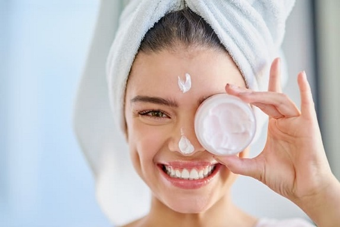

SKINCARE


Welcome to our skincare sanctuary, where radiant skin is more than just a goal it's a way of life.
Our mission is simple: to help you achieve your healthiest, most luminous complexion yet.
At our skincare haven, we believe in the transformative power of nurturing your skin from within.
From gentle cleansers to potent serums, our curated selection of products is designed to pamper your skin with
the finest ingredients nature has to offer.
Whether you're targeting specific concerns or simply indulging .in self-care,
our skincare experts are here to guide you on your journey to glowing, youthful skin. With personalized consultations and tailored skincare routines,
But skincare isn't just about products it's a lifestyle. Your complexion will thank you.
- Daily routines
- 1. EAT HEALTHY
- 2. CLEANSING BEFORE BED
- 3. CLEANSING BEFORE BED
- 4. APPLY SUNSCREEN
- 5. DRINK WATER
- 6. GET ENOUGH SLEEP
- Menicure
Manicure is a treatment that improves the appearance of nails and hands, and softens them, whereas, 'pedicure' has the same impact on feet.
Since manicure and pedicure relax the muscles and skin of the hand and feet,
respectively, it is important to understand some basics about the anatomy of the hand and feet.
Steps to be followed:
- 1. Cleaning
- 2. Shaping
- 3. Cuticle care
- 4. Exfoliation
- 5.Moisturizing
- 6.Polishing
The process begins with cleaning the hands and nails to remove any dirt, oil, or old polish. This is usually done using a gentle cleanser or nail polish remover.
Next, the nails are shaped using a nail file. Common nail shapes include square, round, oval, and almond. The choice of shape often depends on personal preference and the natural shape of the nail.
The cuticles, the thin layer of skin at the base of the nails, are softened using cuticle oil or cream. They are then pushed back and trimmed if necessary. This helps to promote healthy nail growth and gives the nails a neat appearance.
Some manicures may include exfoliating the hands and forearms to remove dead skin cells and promote smoother, softer skin.
Moisturizing the hands and cuticles is an essential step in a manicure. Hand cream or lotion is massaged into the skin to hydrate and nourish, leaving the hands feeling soft and smooth.
The final step is applying nail polish. This can be done in a variety of colors and finishes, from classic reds and pinks to bold metallics and intricate nail art designs. A base coat is usually applied first to protect the nails, followed by one or more coats of colored polish, and finished with a top coat to add shine and prolong the wear of the polish.
- Pedicure
A pedicure is a cosmetic treatment of the feet and toenails, analogous to a manicure. During a pedicure, dead skin cells are rubbed off the bottom of the
feet using a rough stone (often a pumice stone). Skincare is often provided up to the knee, including granular exfoliation, moisturizing, and massage.
Steps to be followed:
- 1. Foot Soak
- 2. Nail Trimming and Shaping
- 3. Cuticle Care
- 4. Exfoliation
- 5.Moisturizing
- 6.Nail Polish Application
The treatment often begins with a relaxing foot soak in warm water mixed with salts or oils. This helps to soften the skin, making it easier to remove dead skin cells and calluses.
Once the feet have soaked for a few minutes, the nails are trimmed to the desired length and shape using clippers and a file. Common nail shapes for pedicures include square, round, oval, and almond.
Like in a manicure, the cuticles around the toenails are softened with cuticle oil or cream and pushed back gently. Trimming the cuticles is typically avoided during a pedicure to reduce the risk of infection.
A foot scrub or exfoliating lotion is then used to slough off dead skin cells, especially on the heels and balls of the feet. This helps to smooth rough patches and leave the skin feeling soft and rejuvenated.
After exfoliation, a rich moisturizer or foot cream is applied to hydrate and nourish the skin. Massaging the feet during this step not only enhances relaxation but also promotes circulation.
If desired, nail polish is applied to the toenails following the same process as in a manicure. This typically involves applying a base coat, two coats of color, and a top coat for added shine and protection. Nail art and decorative accents can also be added for a personalized touch.